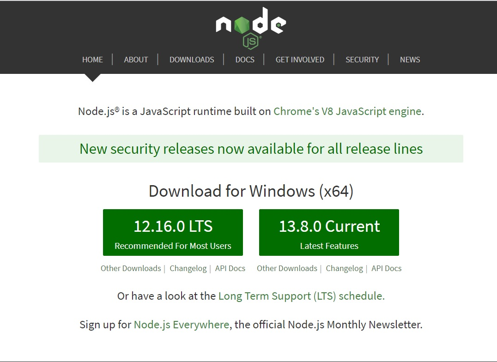
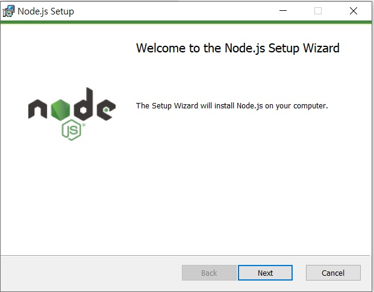
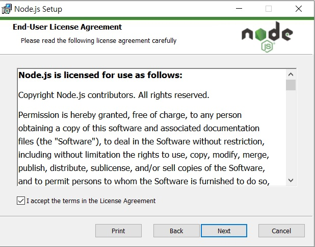
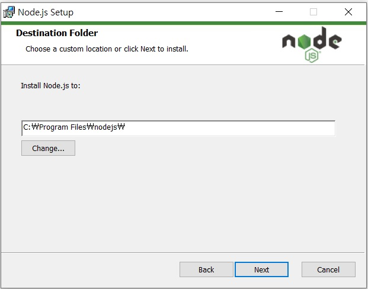
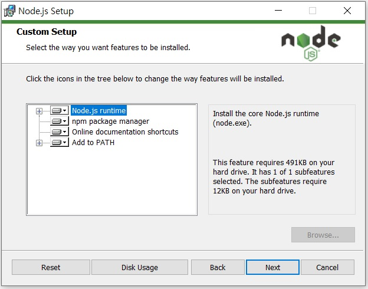
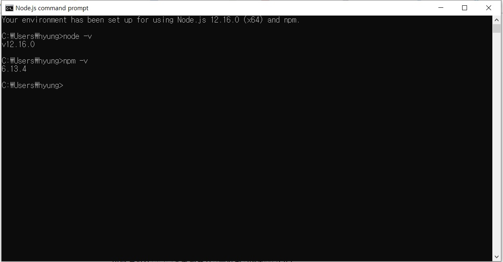

노드 설치하기
- 노드 설치하기
-
그럼 각 운영체제별로 노드를 설치해보겠습니다.
윈도와 맥은 GUI를 사용하므로 웹 브라우저를 통해 설치하겠습니다.
리눅스는 일반적으로 터미널을 통해서 접근하므로 터미널로 설치하는 방법을 알아봅니다.
- 1.4.1.1 윈도
-
이 책은 윈도 10을 기준으로 합니다. 노드의 공식 사이트(https://nodejs.org)에 접속합니다.

LTS는 안정화버전, Current는 최신 버전입니다.
안정화 버전을 다운받아 설치합니다.
- NOTE, LTS와 Current의 차이
-
- LTS
-
기업을 위해 3년간 지원하는 버전입니다. 짝수 버전만 LTS버전이 될 수 있습니다.
서버를 안정적으로 운영해야할 경우 선택하세요.
하지만 최신 기능을 사용하지 못할 수도 있습니다.
-
- Current
-
최신 기능을 담고 있는 버전입니다.
다소 실험적인 기능이 들어 있어 예기치 못한 에러가 발생할 수 있습니다.
서버에 신기능이 필요하거나 학습용으로 사용할 때 적합합니다.
단, 짝수 버전은 LTS가 되기 때문에 Current일 때부터 사용하는 것을 고려해볼 만합니다.
-
- 홀수 버전
-
노드는 6개월마다 버전을 1씩 올립니다.
따라서 10 버전 이전에 9버전도 있었습니다.
하지만 홀수 버전은 LTS를 지원하지 않으므로 10버전이 나오면서 9버전은 사라졌습니다.
나중에 11 버전이 나오면 10 버전이 LTS로 가고 11 버전이 Current가 됩니다.
내려받은 파일을 클릭하여 Setup Wizard를 실행합니다.
Setup Wizard 실행 화면이 나오면 Next 버튼을 눌러 다음으로 넘어갑니다.

라이센스 동의 화면이 나오면 체크박스에 체크표시하고 Next 버튼을 누릅니다.

그 다음 Node.js를 설치할 폴더 경로를 지정합니다. 이 책에서는 기본 경로 그대로 진행하겠습니다.

다음 화면에서는 설치할 프로그램을 선택할 수 있습니다.
위에서부터 순서대로 설명하면 노드 런타임, 노드 패키지 관리자, 온라인 문서 바로가기,
명령 프롬프트에서 노드 명령어를 사용할 수 있게 해주는
시스템 환경변수입니다.
기본적으로 모두 설치됩니다.
Next 버튼을 눌러 다음으로 넘어갑니다.

다음에 나오는 화면에서 Install 버튼을 누릅니다.
권한 확인 창이 나오면 예 버튼을 눌러 설치를 시작합니다.
설치 완료 화면이 나오면 Finish 버튼을 눌러 설치를 마칩니다.
- 노드 정상적으로 설치되었는지 확인
-
이제 설치가 정상적으로 완료되었는지 확인해보겠습니다.
먼저 cmd 창을 엽니다.
다음 명령어를 입력해서 노드의 버전이 올바르게 설치되었는지 확인합니다.

이 책의 버전과는 다를 수 있지만, npm 버전이 명령 프롬프트 창에 뜬다면 설치에 성공한 것입니다.
만약 버전이 뜨지 않고 에러 메시지가 나온다면 노드를 처음부터 다시 설치해야 합니다.